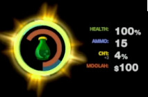
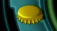
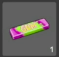
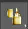
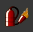
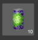
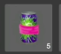

LINKS:
These are links where nearly all tangible info can be found.
INFORMATION ABOUT THE GAME:
Most of the gameplay information in the EGX talk collected into an easily digestible list.
-
The game will still be a platformer, albeit it's levels will be "much more exciting than in the previous games".
"Abe is really about followers, empathy, puzzles. So how do we do that but really turn the volume up to eleven on the genre? So I call it a platformer game and then push that dynamic too."
"I can say our levels are way more interesting."
-
The game will feature a crafting system.
"And those consumer products, he can start converting into weapons and he can have then start finding with collectibles crafting those weapons into more specialized things. So inventory system and crafting has become a key part of what Abe does to get all these Mudokons through the world safely, hopefully."
-
The new thematic around brew is that if a Mudokon becomes addicted to it, then two days of withdrawal will result in their death by cardiac arrest.

-
The brew is also very flammable, which can be potentially used in gameplay (area control?).
"So let's just say brew, one of the side effects of brew is that it's highly flammable. And everyone's addicted to it!"
-
Abe will be able to lead a huge number of Mudokons (up to 301) and OWI completely overhauled the GameSpeak to make this comfortable to use.
"So this game begins with 301 freed Mudokons, that you're going to try and take with you through the journey, because they don't just disappear into the ether, they're gonna stay with you and at times in real time, in play you'll be managing the survival of this many guys on screen at one time."
-
It seems like the Mudokons will be capable of fighting back and the player can select how aggressive they will act.

-
Abe will have an HP bar, Ammo counter and he can also collect Moolah. And he will also be able to amass Chi, which will let him use powerful abilities.
 -
To get the best ending no Slig must die. (Whether we can save them or we just have to leave them be is not known.)
"And in this game you trying not to ideally kill the Sligs either. So a perfect play nobody dies. That's hard as hell! You know, there's a lot of PTSD trauma that's going to take place before you achieve that goal, but that's our goal. In the ideal world Abe would have been able to traverse this very different, dangerous landscape and do that without killing anybody not even Sligs."
-
There is now a concrete Pyramid of Power that shows us just how powerful certain positions are.

-
RuptureFarms is confirmed to have burned down after it has been struck by lightning from the Mudokon Rainmaker.

-
The original trio of Glukkons is now gone, replaced by brand ones. However, Molluck has returned and he looks pretty pissed off. Interestingly there is no Dripik. As I've discussed before, he didn't have much role in the Exoddus, so perhaps he is not part of Soulstorm's story.
"We've renamed all the Glukkons that come with the other factories, so Aslik, Dripik and all of this. These are different guys now, as we were getting more away from what that original story was."
-
The theme of Occultism seems to be returning in SS as evidenced by one Glukkon wearing the "Royal Society Alchemic Science" badge.

"We wouldn’t make it hard. If there are that many on screen at once (and in some cases there are) then Abe’s control over them is slightly different. We’ve refined Abe’s Gamespeak considerably."
ITEMS:
In the EGX talk Lanning showcased a few of the items found in Soulstorm. Here's a list of these screenshot out of the video. OWI has said that these items are early iterations of what we will be able to find in the final version, so take everything here with a grain of salt. The text in quotes are the official descriptions shown in the gameplay footage, the rest are my thoughts.
-
 Brew Bottle - "Splashy, sticky, very tasty and highly flammable. Soulstorm Brew
will help you get the party started and then help you burn down the venue when
you've had enough."
Brew Bottle - "Splashy, sticky, very tasty and highly flammable. Soulstorm Brew
will help you get the party started and then help you burn down the venue when
you've had enough." -  Bottle Cap - "We can't believe this ever got past the Food Standards people, but they put bottlecaps on Soulstorm Brew that make sparks when they hit against hard materials. Sparks plus flammable liquid equals fun."
-
 Fire Extinguisher - "Look, we've all done it. Sometimes you just set fire to
something you wanted to keep. Use this handy fire extinguisher to hastily
correct your overzealous use of flames."
Fire Extinguisher - "Look, we've all done it. Sometimes you just set fire to
something you wanted to keep. Use this handy fire extinguisher to hastily
correct your overzealous use of flames." -
 Empty Bottle - "An empty bottle? What was inside? Who's been having a party?
Why weren't you invited? Never mind, at least these things can be recycled,
right?"
Empty Bottle - "An empty bottle? What was inside? Who's been having a party?
Why weren't you invited? Never mind, at least these things can be recycled,
right?" -  Gum - "The flavor lasts for a few a seconds, but the stickiness is eternal. Chew this up a bit and you can use it to stick one thing to another thing. Handy!"
-  Lighter - "It's like carrying a flint, some kindling at all times. Use it to start fires where there were previously no fires. Also handy to stick to other objects that might benefit from a quick and convenient fire source."
-

Flamethrower - "Well done. You've taken something that was made solely for
putting out fires, tinkered around with it and made it into something that makes
fire at a prodigious rate. Your momma would be proud."
Recipe: Fire extinguisher + Soulstorm Brew + Lighter -  Purple bottle with a green decal and "PoP" written on it in white - Reminds me a bit of the drinks you could get in Munch's Oddysee. Perhaps OWI is revisiting this concept.
-  Purple bottle with a green decal and a purple band over it - The color of this band is very similar to the gum, so perhaps this is the result of crafting the two together.
-
 Jawbreaker-esque round object - I have seriously no idea what this could be. It
looks similar to a ball, but I don't have any idea why would you be able to
carry around one. You can spot a few shapes on it, like a star in the
bottom-left corner. Also, as the picture shows, you can carry 20 of these, so
this object being big would make no sense.
Jawbreaker-esque round object - I have seriously no idea what this could be. It
looks similar to a ball, but I don't have any idea why would you be able to
carry around one. You can spot a few shapes on it, like a star in the
bottom-left corner. Also, as the picture shows, you can carry 20 of these, so
this object being big would make no sense. -
 Blue drink in an SSB bottle - This is obviously the bottle of SoulStorm Brew,
however, the contents aren't the usual green, but instead a shade of blue. My
only speculation is that it is perhaps medicine you can give your addicted
Mudokons, so they don't die for another 48 hours, but without the side-effects
or the flammability of the Brew.
Blue drink in an SSB bottle - This is obviously the bottle of SoulStorm Brew,
however, the contents aren't the usual green, but instead a shade of blue. My
only speculation is that it is perhaps medicine you can give your addicted
Mudokons, so they don't die for another 48 hours, but without the side-effects
or the flammability of the Brew.
CHARACTERS OF THE ARG:
SPIRIT OF 1029 - A Mudokon group of revolutionaries, created and named after Abe's deeds in RuptureFarms 1029. They like to liken themselves to a storm. Their main way of communication are short Tweets denouncing the Magog Cartel and short catchphrases like "We will rise!". Also their logo is based on the front-side view of RuptureFarms erupting in flames.
THE MAGOG CARTEL - Diabolical as always, they both tell you that everything is fine and also that if anything is not fine, it's not their fault. They like to alternate between propaganda fliers and sardonic remarks towards employees, products and workplace-safety. Their logo is similar to the old octopus-like black and white emblem, however, it has become sleeker and taller.
ED - This scaredy schmuck is actually a really important part of the resistance. By leaking information he brings the horrors the Magog to the public's attention. He personally never says too much and that little is usually filled with him being afraid.
ALF - This Mud is not someone you need to be introduced to. He's smooth as always, however, the recent turn of events and Ed's pleas have revealed this usually cheerful guy's caring and anxious side.
ASSET98 - Another member of the SO1029. While his input provided to be very important in solving the mysteries of the ARG, his career was cut short when the Cartel caught and executed him because of the community's mishap.
ASSET99 - Asset 98's successor, he is just as secretive as 98 was. He also provided vital information towards the solutions of multiple puzzles.